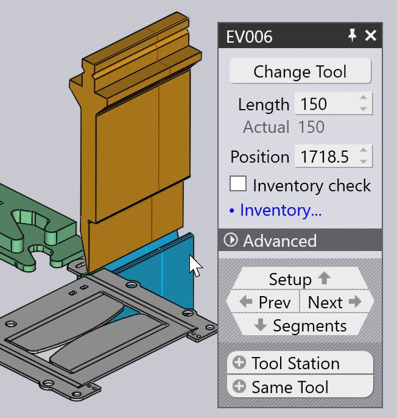

Buigparameters aanmaken
U kunt Buigtechnologiegegevens aanmaken voor een plaatstuk met behulp van de Buigmodule. Dit wordt ook wel het stuk uitrusten voor buigen genoemd. Laten we aannemen dat u al een machine geïnstalleerd heeft en dat u de gereedschapsvoorraad heeft geconfigureerd, en dat u een CAD-stuk (2D of 3F) heeft geïmporteerd:

Overschakelen naar Buig CAM
Nu kan het stuk worden uitgerust voor buigen door op de knop B te drukken. Het stuk is uitgerust met de standaard buigmachine. Dit is de kantbank die u als laatste heeft gebruikt. Gereedschapsvolgorde, buiginstelling, aanslagposities worden allemaal berekend, en u zou een resultaat als volgt moeten zien:

Als er geen fouten zijn, worden het NC-programma (en mogelijk het instellingsblad) voor het stuk ook gegenereerd en opgeslagen in de uitvoermap die voor deze machine is ingesteld. Hier ziet u een gedeelte van een typische stukinstelling sheet[1] aan te passen (ook wel het buigrapport genoemd).

| Zie ook het venster Workflow dat u kunt bereiken met de knop W. Dit geeft meer controle over het creëren van buigtechnologiegegevens en opties voor het routeren van het stuk via laser CAM of nesting. |
Verdere procedures
Hier is een korte samenvatting van enkele van de procedures die u kunt uitvoeren nadat een stuk is uitgerust voor buigen.
-
Als u op Spacebar klikt, start een buigsimulatie. U kunt ook de simulatiebesturingen gebruiken op de Buignavigator om de simulatie te starten, stoppen of terug te spoelen:

-
Als er waarschuwingen of fouten zijn, worden deze weergegeven in de Buignavigator, en u kunt deze bekijken en oplossen door op de bijbehorende cellen te klikken:

-
U kunt de buiggereedschappen (stempels en matrijzen), de aanslaginstelling of de hoekmeetinstelling bewerken door direct op dat object klikken in het simulatieaanzicht:
 -
U kunt de machine wijzigen door op de naam van de machine te klikken in het tabblad onder het stuk en een andere machine selecteren:

-
Klik op het pictogram Settings
 in de werkbalk links om aanvullende instellingen te bewerken voor elke buiging (of om de standaardinstellingen te bewerken die voor deze buigmachine, of voor de gehele TecZone Bend-toepassing worden gebruikt).
in de werkbalk links om aanvullende instellingen te bewerken voor elke buiging (of om de standaardinstellingen te bewerken die voor deze buigmachine, of voor de gehele TecZone Bend-toepassing worden gebruikt). -
Klik op het pictogram Display
 in de linker werkbalk om de weergave van de machine te bewerken - u kunt de weergave van extra componenten zoals de matrijsrail, de buigbalk, het achteraanslag-steunsysteem aan of uit zetten. Je kunt ook verschillende componenten doorschijnend maken. Als een buigoplossing zonder fouten is gemaakt, worden automatisch het stuk NC-programma en een instellingsblad voor het buigen gegenereerd.
U kunt de instellingspagina Bend Outputs gebruiken om in te stellen of het stuk NC-programma en het instellingsblad automatisch worden gegenereerd, en ook om de bestemming voor deze uitvoeren te configureren, en de indeling van de rapporten.
Als er code is gegenereerd, wordt de knop NC-programma in de linker werkbalk grijs weergegeven:
in de linker werkbalk om de weergave van de machine te bewerken - u kunt de weergave van extra componenten zoals de matrijsrail, de buigbalk, het achteraanslag-steunsysteem aan of uit zetten. Je kunt ook verschillende componenten doorschijnend maken. Als een buigoplossing zonder fouten is gemaakt, worden automatisch het stuk NC-programma en een instellingsblad voor het buigen gegenereerd.
U kunt de instellingspagina Bend Outputs gebruiken om in te stellen of het stuk NC-programma en het instellingsblad automatisch worden gegenereerd, en ook om de bestemming voor deze uitvoeren te configureren, en de indeling van de rapporten.
Als er code is gegenereerd, wordt de knop NC-programma in de linker werkbalk grijs weergegeven:

Als u wijzigingen aanbrengt in het stuk wordt deze knop weer ingeschakeld en kunt u het NC-programma opnieuw genereren door opnieuw op dit pictogram te klikken (of door op de knop C te drukken).